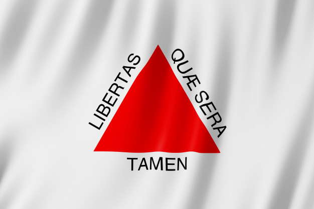

Richard Soares Farias
Nascimento:18 Agosto 1980
Naturalidade:  Minas Gerais
Nacionalidade:  Brasileira
Brasileira
Estado Civíl: Casado
 (31) 98742-53-18
(31) 98742-53-18
 richard.sfarias@outlook.com
richard.sfarias@outlook.com
https://github.com/Richard-Farias
 https://www.linkedin.com/in/richardfarias-estagioti/
https://www.linkedin.com/in/richardfarias-estagioti/
Tenho 40 anos e sou graduando do curso de sistema da informação na Universidade Salgado de Oliveira.
Tenho por experiências diversos segmentos que passam pela metarlugia, asscessor de vendas e estagiário em Business Inteligence.
Essas oportunidades proporcionaram a capacidade de trabalhar em equipe e valorizar o trabalho do próximo,e o entendimento dos valores que um bom profissional deve ter.
Valorizo as experiências nas empresas onde atuei com muito empenho para absorver o máximo conhecimento para ser passada adiante da forma mais humilde possível.
E como tudo na vida tem um ciclo e por querer sempre algo novo,hoje busco em minha futura formação acadêmica a base de todo conhecimento possível para alcançar o objetivo de ser um profissional de ti qualificado e atender as espectativas do mercado.
Richard Soares Farias
Desenvolvedor FullStack
-
PRODEMGE - Tecnologia da informação do estado de Minas Gerais
Estagiário de Desenvolvimento Java
Período: Atual
- Ramo de atividades: Acompanhamento em desenvolvimento Java, Consulta de banco de dados Oracle, acompanhamento e análise de erros de software
-
MG INFO INFORMÁTICA LTDA-ME
Estagiário de Business Inteligence
Período: Março de 2019 a Setembro 2019
- Ramo de atividades: Análise de dados e desenvolvimento de dashboard em Power Bi e Análise Server
-
LEROY MERLIN CIA. BRAS. DE BRICOLAGEM
Assessor de vendas
Período: Março de 2014 a Setembro 2018
- Ramo de atividades: Atendimento ao cliente, dinamizando o relacionamento por meio de uma interface comercial e atendimento personalizado.
-
FIAT AUTOMOVEIS S. A.
Revisor de processo industrial
Período: Janeiro de 2006 a Junho de 2013.
- Ramo de atividades: Revisão de processo em linha de produção e inspeção de qualidade em Pintura automotiva.
UNIVERSO - Universidade Salgado de Oliveira – Belo Horizonte – MG
Sistema da Informação
Cursando 6° período, conclui em 2021
Cursos de Informática básica – (Manutenção de Micro /Instalação de Software e Sistema)
Período: Curso básico de Office
Curso dos fundamentos Básico de Power Bi
Fundamentos básico Java e Orientação a Objeto
Fundamentos básico PHP
Fundamentos básico Java Scrip
Fundamentos básico CSS
Fundamentos básico HTML
Fundamentos básico em Linguagem SQL